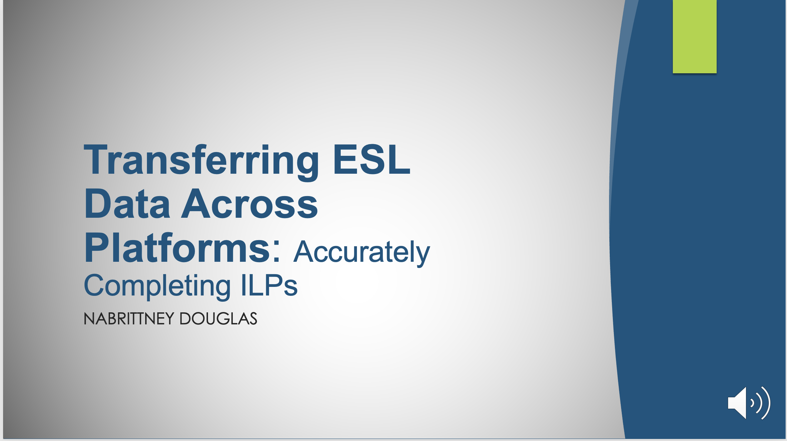

My Featured Projects

Transferring ESL Data Across Platforms
Description: This training was developed to help a group of ESL teachers transfer ESL data from one data management system to another. The identified problem that needed to be resolved included sorting and identifying students and completing ILPs accurately. The asynchronous module included a video, scenario-based activities, and various assessments. Microsoft PowerPoint was used to outline the training, and Articulate 360 was the intended development tool. A job aid was also created to support users throughout the process.
Reflection: After developing the training, I gained experience working with SMEs and stakeholders. I practiced adult learning theories and applied the ADDIE model during development. I also enhanced my skills in survey development, data analysis, asynchronous training development, and creating objective-driven activities and assessments.
Click to download training outline
Download DocumentDownload PowerPoint

Learning to Communicate Using PECS
Description: Many teachers within my school had difficulty communicating with non-verbal students. As part of the instructional leadership team, I collaborated with administrators and the Speech-Language Pathologist to develop a school-wide strategy. I created a slide deck to train teachers on using a Picture Exchange Communication System (PECS). The training explained what PECS is, how to implement it, and how it improves communication skills. Microsoft PowerPoint was used to develop the instructor-led training.
Reflection: After delivering the training, teachers gained insight into better ways to communicate with their students. They learned the importance of PECS and strategies for creating personalized systems within their classrooms. Some teachers required additional workshops and work sessions, but overall the training was successful.

Healthcare Compliance and Risk Management Essentials
Description: This self-development project helped me strengthen my technological skills and become more familiar with AI-supported e-learning development. I created an interactive healthcare compliance course using Articulate Rise. The course was designed to help healthcare professionals understand compliance standards and risk management practices within clinical settings.
Reflection: During development, I recognized the importance of accessibility and reorganized the course to avoid information overload. I added audio, closed captions, and accessible fonts to improve usability. Ultimately, the course met its objectives while helping me improve my understanding of AI-supported instructional design.

Seasonal Planting Guide
Description: As a member of the school's gardening committee, I created an infographic to help teachers and students understand what vegetables should be planted during each season. Many students in the gardening club had little gardening experience, so the infographic provided a clear and visually engaging guide based on our local planting calendar. Canva was used to create the infographic.
Reflection: Creating this infographic allowed me to share important seasonal planting information with both students and teachers. The project successfully supported learning within the gardening club while helping me improve my visual communication and design skills.